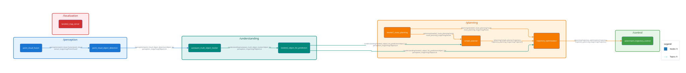
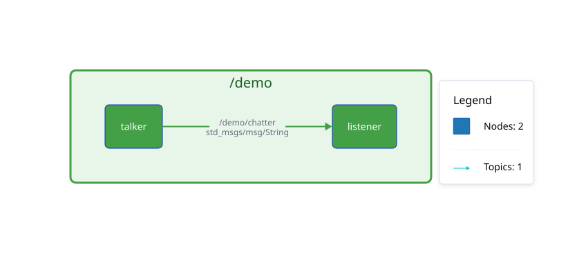

ROS 2 Node and Topic Graph Exporter
The ros2_graph_export node exports the current graph of ROS 2 nodes and topics to a D2 diagram definition file, auto-rendered to SVG. A sample export generated in the OpenADStack repository is shown below.

🚀 Quick Start • 💻 Development • 📝 Documentation
- Important
- This repository is part of OpenADS, the Open Automated Driving Systems project. OpenADS and its modules have been initiated and are currently being maintained by the Institute for Automotive Engineering (ika) at RWTH Aachen University.
🚀 Quick Start
- Launch the
demo/docker-compose.ymlsetup. This will start a ROS 2 graph export node along with a dummy publisher and subscriber node.cd demodocker compose up -d
- Check out the generated D2 diagram defined in
demo/output/ros_graph.d2and the rendered SVG indemo/output/ros_graph.svg.

{kind=link}
- Stop the demo and clean up. docker compose down
- If you would like to modify the D2 diagram, you can re-render it with the following command. A live preview of the diagram will be available at http://localhost:8080. Alternatively, you can also use the D2 playground. docker run --rm -it -u "$(id -u):$(id -g)" -v "$PWD:/home/debian/src" -p 8080:8080 terrastruct/d2:v0.7.0 --layout elk --watch output/ros_graph.d2
💻 Development
Set up Development Environment
- Clone the repository. git clone https://github.com/openads-project/ros2_graph_export.git
- Initialize the
.openads-dev-environmentsubmodule containing development environment configuration.cd ros2_graph_exportgit submodule update --init --recursive
- Open the repository in Visual Studio Code. code .
- Install the recommended VS Code extensions.
Ctrl+Shift+P / Extensions: Show Recommended Extensions / Install Workspace Recommended Extensions (Cloud Download Icon)
- Reopen the repository in a Dev Container. Ctrl+Shift+P / Dev Containers: Rebuild and Reopen in Container
Build
Ctrl+Shift+B
Run Tests
Ctrl+Shift+P / Tasks: Run Test Task
📝 Documentation
Package and node interfaces are documented in the respective package READMEs listed below. Implementation details are found in the Source Code Documentation.
| Package | Description |
|---|---|
| ros2_graph_export | Exports ROS node and topic graphs |
⚖️ Licensing
The source code in this repository is licensed under Apache-2.0, see [LICENSE](LICENSE). Container images provided by this repository may contain third-party software shipped with their own license terms.
🙏 Acknowledgements
Development and maintenance of this repository are supported by the following projects. We acknowledge the funding of the respective institutions.
| Project | Funding Institution | Grant Number |
|---|---|---|
| 6GEM+ | 🇩🇪 Federal Ministry for Research, Technology and Space (BMFTR) | 16KIS2409K |